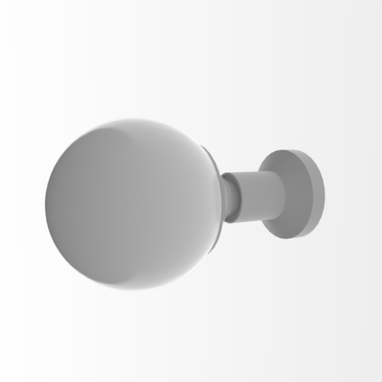

I have this spherical sconce luminaire in my house. I don't know what product it is or where it came from, but I measured it. It has a plastic socket and it has a white coated sphere as a globe / bulb. So yes, technically this model includes the full luminaire, and that's why I kept "sconce" in the name.
The globe / lamp itself as an LG125/860B22 bulb with a opal polycarbonate diffuser sphere, with a white plastic shell. It with the following features:
- B22 base
- High efficiency SMD LED chips inside with a 270 degree beam
- 6000K
- CRI>80
- 1200 lumens
There is no .ies file.
Materials
The colours have been calibrated with Macbethcal but the specularity and roughness values are guessed.
Two version of the bulb material are provided - one is when the bulb is off, and
one when the bulb is on. As there is no .ies file, but as the globe emits a
rather omnidirectional white light, it is approximated with a light material,
with the options taken from lampcolor. Depending on which .rad file you
include, you can either turn the bulb on or off.
Usage
This Radiance model follows the Radiance Filesystem Hierarchy
Standard. As
such, please run make lib to build the Radiance mesh file. Once done, you can
use this in your scene by:
!xform lib/lamp-sconce-lg125-860b22/obj/bulb-off.rad
!xform lib/lamp-sconce-lg125-860b22/obj/bulb-on.rad
Authors
This model was created by Dion Moult.